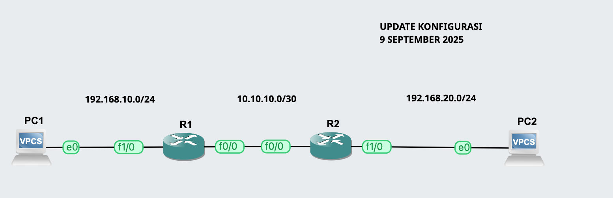

EIGRP (Enhanced Interior Gateway Routing Protocol)
EIGRP adalah protokol routing interior canggih yang dikembangkan oleh Cisco. EIGRP menggunakan algoritma DUAL (Diffusing Update Algorithm) untuk menentukan jalur terbaik dan cepat beradaptasi terhadap perubahan topologi jaringan.
IGRP adalah protokol routing interior yang dikembangkan oleh Cisco sebelum EIGRP. IGRP menggunakan algoritma distance-vector dengan metrik komposit (bandwidth, delay, load, reliability) untuk memilih jalur terbaik dalam jaringan internal. IGRP lebih sederhana tetapi kurang cepat konvergensinya dibanding EIGRP.
- Kelebihan: Cepat konvergensi, mendukung VLSM, load balancing secara otomatis, hemat bandwidth dengan update parsial.
- Keterbatasan: Hanya bekerja optimal pada jaringan Cisco (proprietary) sebelum versi EIGRP untuk IPv6 terbuka.
- Gunakan Saat: Jaringan LAN dan WAN Cisco yang kompleks membutuhkan konvergensi cepat dan load balancing otomatis.
IGRP vs EIGRP
IGRP dan EIGRP adalah protokol routing interior yang dikembangkan oleh Cisco. IGRP adalah versi lama dengan algoritma distance-vector, sedangkan EIGRP adalah versi lanjutan (enhanced) yang hybrid dan lebih cepat konvergensinya.
Perbandingan Fitur
| Fitur | IGRP | EIGRP |
|---|---|---|
| Algoritma | Distance-vector | Hybrid (Distance-vector + Link-state, DUAL) |
| Metrik | Bandwidth, Delay, Load, Reliability | Bandwidth, Delay, Load, Reliability, MTU (lebih fleksibel) |
| Classful/Classless | Classful (tidak mendukung VLSM) | Classless (mendukung VLSM & CIDR) |
| Konvergensi | Lambat dibanding EIGRP | Cepat, menggunakan DUAL |
| Maks Hop | 255 | 224 |
| Proprietary | Hanya Cisco | Hanya Cisco (meski ada versi untuk multi-vendor terbatas) |
| Penggunaan Ideal | Jaringan internal Cisco besar sebelum EIGRP | Jaringan LAN/WAN Cisco kompleks dengan kebutuhan konvergensi cepat dan load balancing otomatis |
Tips Praktis
- Pastikan semua router EIGRP menggunakan AS number yang sama agar dapat bertukar routing.
- Gunakan passive-interface untuk mencegah update EIGRP di interface tertentu.
- Periksa metric EIGRP (bandwidth, delay) agar jalur terbaik sesuai kebutuhan jaringan.
CONTOH KASUS
R1
!
hostname R1
!
interface FastEthernet0/0
ip address 10.10.10.1 255.255.255.252
duplex half
!
interface FastEthernet1/0
ip address 192.168.10.1 255.255.255.0
duplex half
!
router eigrp 100
network 10.10.10.0 0.0.0.3
network 192.168.10.0
no auto-summary
!
R2
hostname R2
!
!
interface FastEthernet0/0
ip address 10.10.10.2 255.255.255.252
duplex half
!
interface FastEthernet1/0
ip address 192.168.20.1 255.255.255.0
duplex half
!
router eigrp 100
network 10.10.10.0 0.0.0.3
network 192.168.20.0
no auto-summary
!
Distribute-List pada EIGRP
Distribute-list adalah fitur di EIGRP (juga tersedia pada protokol routing lain) untuk mengontrol route yang masuk (inbound) atau keluar (outbound) dari routing table. Dengan kata lain, distribute-list digunakan untuk filtering route berdasarkan:
- Access-list (ACL) → filter berdasarkan network address.
- Prefix-list → filter lebih spesifik, lebih sering digunakan pada konfigurasi modern.
- Route-map → filter lebih fleksibel, dapat menggabungkan prefix dengan kondisi lain seperti tag atau metric.
Jenis Filtering
-
Inbound distribute-list: mencegah route tertentu masuk ke routing table EIGRP.
Efek: router tidak akan mengenal route tersebut sama sekali.
router eigrp <AS> distribute-list <ACL/PREFIX> in <interface> -
Outbound distribute-list: mencegah router meng-advertise route tertentu ke tetangganya.
Efek: router tetap menyimpan route tersebut di routing table, tetapi tetangga tidak akan menerima.
router eigrp <AS> distribute-list <ACL/PREFIX> out <interface>
Contoh Kasus
Misalnya kita memiliki topologi di mana R1 terhubung ke R2 lewat FastEthernet0/0. R1 memiliki jaringan 192.168.10.0/24 dan 192.168.20.0/24, tetapi kita hanya ingin meng-advertise 192.168.10.0/24 ke R2.
Konfigurasi Outbound Filtering di R1:
R1(config)# access-list 1 permit 192.168.10.0 0.0.0.255
R1(config)# router eigrp 100
R1(config-router)# network 192.168.10.0
R1(config-router)# network 192.168.20.0
R1(config-router)# distribute-list 1 out FastEthernet0/0
Hasil: R2 hanya belajar 192.168.10.0/24, tidak mengetahui 192.168.20.0/24.
Konfigurasi Inbound Filtering di R2:
R2(config)# access-list 1 permit 192.168.10.0 0.0.0.255
R2(config)# router eigrp 100
R2(config-router)# distribute-list 1 in FastEthernet0/0
Hasil: R2 hanya menaruh 192.168.10.0/24 ke routing table, walaupun R1 sebenarnya mengirim dua network.
Ringkasan Penting
- Inbound: route dicegah masuk ke routing table.
- Outbound: route dicegah keluar ke tetangga.
- Bisa menggunakan ACL, prefix-list, atau route-map untuk filtering.
- Outbound filtering lebih “ramah” → router tetap mengetahui route, hanya tidak dibagikan ke tetangga.
- Inbound filtering bisa menyulitkan troubleshooting karena router benar-benar tidak mengenal route tersebut.
Prefix-List pada EIGRP
Prefix-list adalah cara modern menggantikan ACL untuk filtering route. Lebih fleksibel dan spesifik karena bisa mengatur:
- Network prefix → misalnya 192.168.10.0/24
- Prefix length range → misalnya 192.168.0.0/16 le 24 (artinya semua subnet dari /16 sampai /24)
Prefix-list sangat umum dipakai untuk filtering pada EIGRP, OSPF, maupun BGP.
Filtering Prefix-List Inbound
Inbound prefix-list diterapkan saat router menerima update EIGRP dari tetangga. Jika network tidak diizinkan oleh prefix-list, maka network tersebut tidak akan masuk ke routing table router.
Sintaks Dasar
Buat prefix-list:
ip prefix-list <NAMA> seq <NOMOR> permit|deny <prefix> [ge <n>] [le <m>]
- ge = greater-equal (panjang prefix minimal)
- le = less-equal (panjang prefix maksimal)
Terapkan di EIGRP:
router eigrp <AS>
distribute-list prefix <NAMA> in <interface>
Contoh Kasus
Misalnya R1 meng-advertise ke R2 jaringan: 192.168.10.0/24, 192.168.20.0/24, 192.168.30.0/24. Tapi di R2, kita hanya ingin menerima 192.168.10.0/24 dan 192.168.20.0/24.
R2(config)# ip prefix-list ALLOW_ROUTES seq 5 permit 192.168.10.0/24
R2(config)# ip prefix-list ALLOW_ROUTES seq 10 permit 192.168.20.0/24
R2(config)# ip prefix-list ALLOW_ROUTES seq 20 deny 0.0.0.0/0 le 32
!
R2(config)# router eigrp 100
R2(config-router)# distribute-list prefix ALLOW_ROUTES in FastEthernet0/0
Efek:
- 192.168.10.0/24 → diterima
- 192.168.20.0/24 → diterima
- 192.168.30.0/24 → ditolak (tidak ada di routing table)
Contoh dengan Range Prefix
Jika ingin menerima semua subnet dari 192.168.0.0/16 dengan prefix /24 saja:
ip prefix-list ALLOW_ROUTES seq 5 permit 192.168.0.0/16 ge 24 le 24
Artinya: hanya menerima network dengan /24 subnet dari 192.168.0.0/16.
Ringkasan
- Prefix-list lebih baik daripada ACL untuk filtering route.
- in → filter route yang masuk ke router.
- Bisa menggunakan ge dan le untuk range prefix, membuat prefix-list lebih powerful.
- Jangan lupa buat deny all di akhir jika ingin filtering strict (default ada implicit deny all).
Prefix-List Outbound pada EIGRP
Konsep: Prefix-list outbound digunakan untuk mengontrol route yang router iklankan ke tetangga. Bedanya dengan inbound:
- Inbound: route tidak masuk ke routing table router.
- Outbound: router tetap menyimpan route di routing table, tetapi hanya mengiklankan route tertentu ke neighbor.
Outbound biasanya lebih aman untuk policy control, karena router tetap mengetahui semua route, tetapi tetangga hanya menerima route yang diizinkan.
Sintaks Dasar
Buat prefix-list:
ip prefix-list <NAMA> seq <NOMOR> permit|deny <prefix> [ge <n>] [le <m>]
Terapkan ke EIGRP:
router eigrp <AS>
distribute-list prefix <NAMA> out <interface>
Contoh Kasus
Misalnya R1 memiliki tiga jaringan: 192.168.10.0/24, 192.168.20.0/24, 192.168.30.0/24 pada EIGRP AS 100. Kita hanya ingin meng-advertise 192.168.10.0/24 dan 192.168.20.0/24 ke R2.
R1(config)# ip prefix-list EXPORT_ROUTES seq 5 permit 192.168.10.0/24
R1(config)# ip prefix-list EXPORT_ROUTES seq 10 permit 192.168.20.0/24
R1(config)# ip prefix-list EXPORT_ROUTES seq 20 deny 0.0.0.0/0 le 32
!
R1(config)# router eigrp 100
R1(config-router)# network 192.168.10.0 0.0.0.255
R1(config-router)# network 192.168.20.0 0.0.0.255
R1(config-router)# network 192.168.30.0 0.0.0.255
R1(config-router)# distribute-list prefix EXPORT_ROUTES out FastEthernet0/0
Efek:
- R1 tetap menyimpan ketiga route di routing table.
- R2 hanya menerima 192.168.10.0/24 dan 192.168.20.0/24.
- 192.168.30.0/24 tidak pernah sampai ke R2.
Contoh dengan Range Prefix
Jika hanya ingin meng-advertise network /24 dari blok 192.168.0.0/16:
ip prefix-list EXPORT_ROUTES seq 5 permit 192.168.0.0/16 ge 24 le 24
Efek: hanya subnet /24 dari 192.168.0.0/16 yang diiklankan ke neighbor.
Ringkasan
- Prefix-list outbound → filter route yang keluar (advertise).
- Router tetap menyimpan semua route, tetapi neighbor hanya menerima route yang di-permit.
- Lebih fleksibel karena bisa menggunakan ge & le untuk range subnet.
- Cocok untuk policy-based control, misalnya ISP hanya meng-advertise sebagian prefix ke customer.
Filtering ACL Ganjil & Genap pada EIGRP
Konsep: ACL (Access Control List) bisa digunakan untuk filtering route di EIGRP melalui distribute-list. Kita bisa membuat pola subnet berdasarkan angka terakhir (host portion) untuk membedakan network ganjil dan genap. Triknya: menggunakan wildcard mask.
Ganjil & Genap dalam IP Address
Misalnya network kelas C /24:
- Ganjil: 192.168.1.1, 192.168.1.3, ...
- Genap: 192.168.1.0, 192.168.1.2, ...
Dalam routing, filtering biasanya di level network prefix, bukan host. Triknya: buat ACL yang “mengizinkan” subnet tertentu berdasarkan angka terakhir network.
Contoh blok /24 dari 192.168.0.0/16:
- Genap: 192.168.0.0/24, 192.168.2.0/24, 192.168.4.0/24 …
- Ganjil: 192.168.1.0/24, 192.168.3.0/24, 192.168.5.0/24 …
Cara Membuat ACL
1. Filter Network Genap:
access-list 10 permit 192.168.0.0 0.0.254.255
Penjelasan:
- 192.168.0.0 → base network
- 0.0.254.255 → wildcard mask: bit ke-2 dari belakang dipakai untuk “skip”, sehingga hanya network genap (/24) yang match
2. Filter Network Ganjil:
access-list 11 permit 192.168.1.0 0.0.254.255
Efek: semua subnet ganjil (/24) dari blok 192.168.0.0/16.
Contoh Kasus
Misalnya R1 meng-advertise banyak subnet dari 192.168.0.0/16, tetapi R2 hanya ingin menerima subnet genap.
Inbound Filtering di R2:
R2(config)# access-list 10 permit 192.168.0.0 0.0.254.255
R2(config)# router eigrp 100
R2(config-router)# distribute-list 10 in FastEthernet0/0
Efek: R2 hanya menerima route 192.168.0.0/24, 192.168.2.0/24, 192.168.4.0/24, dst. Semua subnet ganjil tidak masuk ke routing table.
Alternatif Outbound Filtering di R1:
R1(config)# access-list 11 permit 192.168.1.0 0.0.254.255
R1(config)# router eigrp 100
R1(config-router)# distribute-list 11 out FastEthernet0/0
Efek: R1 tetap menyimpan semua route, tetapi ke R2 hanya subnet ganjil yang di-advertise.
Ringkasan
- ACL dengan wildcard mask dapat digunakan untuk filter “ganjil & genap”.
- 0.0.254.255 → lompat 2 network sekali, cocok untuk filter genap/ganjil.
- Bisa diterapkan di distribute-list in (kontrol route diterima) atau out (kontrol route diiklankan).
Filtering AD pada EIGRP
Konsep: Filtering AD bukan berarti membuang route dengan AD tertentu, melainkan mengontrol preferensi route dengan cara memanipulasi nilai AD. Semakin kecil nilai AD, semakin dipercaya. Dengan ini kita bisa membuat backup route, menurunkan prioritas protokol tertentu, atau menghindari loop.
Administrative Distance (AD)
Default nilai AD pada Cisco Router:
- Connected = 0
- Static = 1
- EIGRP internal = 90
- IGRP = 100
- OSPF = 110
- EIGRP external = 170
- Unknown/Unreachable = 255
👉 Jadi kalau router menerima beberapa route menuju prefix yang sama, maka route dengan AD terkecil yang akan dipakai.
Konfigurasi Global AD di EIGRP
router eigrp 100
distance eigrp <internal-distance> <external-distance>
Contoh:
router eigrp 100
distance eigrp 95 180
Efek:
- EIGRP internal route punya AD 95 (lebih rendah dari OSPF 110, jadi masih dipilih).
- EIGRP external route punya AD 180 (lebih tinggi dari OSPF, jadi tidak dipilih kalau ada OSPF).
Filtering AD Per Prefix
Untuk lebih granular, kita bisa set AD berdasarkan prefix tertentu dengan ACL/prefix-list.
access-list 10 permit 10.10.10.0 0.0.0.255
router eigrp 100
distance 200 0.0.0.0 255.255.255.255 10
👉 Efek: prefix 10.10.10.0/24 via EIGRP sekarang punya AD = 200, sehingga router lebih memilih OSPF (AD = 110).
Ringkasan
- AD Filtering = mengontrol preferensi route dengan mengubah AD.
- Bisa global (
distance eigrp …) atau selective (distance … <prefix>). - Bukan membuang route, melainkan menurunkan prioritas supaya tidak dipilih.
- Cocok untuk policy routing, backup path, dan kontrol redistribusi antar protokol.
EIGRP Authentication 🚀
Konsep: Authentication di EIGRP dipakai untuk memastikan hanya router yang sah yang bisa membentuk adjacency. Jika kunci tidak cocok → adjacency gagal → tidak ada pertukaran routing. Mendukung MD5 (legacy) dan HMAC-SHA256 (IOS 15.x ke atas). Biasanya digunakan di jaringan shared medium (Ethernet, Frame Relay, MPLS VPN) untuk keamanan.
Langkah Konfigurasi (MD5 Authentication)
1. Buat Key-Chain
R1(config)# key chain EIGRP_KEYS
R1(config-keychain)# key 1
R1(config-keychain-key)# key-string cisco123
👉 key-string = password (harus sama di semua router).
2. Aktifkan Authentication di Interface
R1(config)# interface FastEthernet0/0
R1(config-if)# ip authentication mode eigrp 100 md5
R1(config-if)# ip authentication key-chain eigrp 100 EIGRP_KEYS
👉 100 = nomor Autonomous System (AS) EIGRP.
3. Ulangi di Router Neighbor (R2)
R2(config)# key chain EIGRP_KEYS
R2(config-keychain)# key 1
R2(config-keychain-key)# key-string cisco123
R2(config)# interface FastEthernet0/0
R2(config-if)# ip authentication mode eigrp 100 md5
R2(config-if)# ip authentication key-chain eigrp 100 EIGRP_KEYS
Verifikasi
R1# show ip eigrp neighbors
👉 Jika password salah, adjacency tidak terbentuk.
%DUAL-5-NBRCHANGE: IP-EIGRP(0) 100: Neighbor 192.168.1.2 (FastEthernet0/0) is down: authentication failure
Authentication dengan SHA-256 (lebih baru)
R1(config)# key chain EIGRP_KEYS
R1(config-keychain)# key 1
R1(config-keychain-key)# key-string cisco123
R1(config-keychain-key)# cryptographic-algorithm hmac-sha-256
👉 Lebih aman daripada MD5.
Ringkasan
- Tujuan: cegah router tidak sah membentuk adjacency.
- Metode: MD5 (lama), HMAC-SHA256 (baru).
- Langkah: buat key-chain → aktifkan di interface dengan AS number.
- Efek: jika password tidak cocok, adjacency gagal terbentuk.
EIGRP Summarization
Konsep: Summarization = menggabungkan beberapa route detail (specific routes) menjadi satu route summary yang lebih besar. Tujuannya untuk mengurangi ukuran routing table, mengurangi traffic update, dan meningkatkan stabilitas (jika 1 subnet down, summary tetap ada).
Default Behavior
Pada IOS lama, EIGRP melakukan auto-summary ke classful boundary. Misalnya 192.168.1.0/24 dan 192.168.2.0/24 otomatis disummarize ke 192.168.0.0/16. Sejak IOS 12.2(13)T, auto-summary disabled by default.
router eigrp 100
auto-summary
👉 Perintah di atas mengaktifkan kembali auto-summary jika diperlukan (jarang dipakai sekarang).
Manual Summarization
Manual summary dilakukan di interface tempat EIGRP mengiklankan route.
Contoh Kasus: R1 memiliki 4 network:
- 192.168.1.0/24
- 192.168.2.0/24
- 192.168.3.0/24
- 192.168.4.0/24
👉 Semua bisa disummarize menjadi 192.168.0.0/22
R1(config)# interface FastEthernet0/0
R1(config-if)# ip summary-address eigrp 100 192.168.0.0 255.255.252.0
Efek:
- R1 tetap tahu semua subnet detail (/24).
- Neighbor hanya menerima summary route 192.168.0.0/22.
Null0 Route (Loop Prevention)
Saat router membuat summary, otomatis dibuatkan static route ke Null0:
ip route 192.168.0.0 255.255.252.0 Null0
👉 Fungsinya untuk mencegah loop jika ada paket menuju subnet yang tidak benar-benar ada.
Verifikasi
Cek routing table di neighbor:
R2# show ip route eigrp
Neighbor hanya melihat 192.168.0.0/22, bukan detail /24.
Cek summary di interface:
R1# show ip eigrp interface detail FastEthernet0/0
Ringkasan
- Auto-summary = classful, disabled by default, jarang dipakai.
- Manual summary = dilakukan di interface, sangat fleksibel.
- Router tetap tahu subnet detail, neighbor hanya lihat summary.
- EIGRP selalu membuat Null0 route untuk mencegah loop.
EIGRP Unicast Update
Konsep Dasar: Normalnya, EIGRP mengirim update ke multicast address 224.0.0.10.
Artinya semua router EIGRP di segmen jaringan akan menerima update.
Namun dalam kondisi tertentu, update bisa dikirim menggunakan unicast.
Kapan EIGRP Menggunakan Unicast?
- Neighbor Discovery / Recovery: jika adjacency dengan tetangga tertentu down, EIGRP bisa kirim unicast hello/update untuk mencoba recovery.
- Peer Tidak Mendukung Multicast: misalnya di point-to-point link (Serial, GRE tunnel, NBMA seperti Frame Relay, DMVPN).
- Explicit Unicast Neighbor: jika menggunakan perintah
neighbordi konfigurasi EIGRP, maka interface tersebut tidak lagi menggunakan multicast, melainkan unicast.
Contoh Konfigurasi (Unicast Neighbor)
R1 dan R2 terhubung point-to-point (10.1.1.1 ↔ 10.1.1.2). Kita paksa EIGRP pakai unicast update:
R1:
router eigrp 100
network 10.1.1.0 0.0.0.255
neighbor 10.1.1.2 FastEthernet0/0
R2:
router eigrp 100
network 10.1.1.0 0.0.0.255
neighbor 10.1.1.1 FastEthernet0/0
👉 Efek: multicast ke 224.0.0.10 tidak dipakai di interface tersebut. Semua hello & update dikirim unicast ke neighbor.
Verifikasi
show ip eigrp neighbors
show ip eigrp interface detail
👉 Akan terlihat bahwa multicast disabled di interface dengan konfigurasi neighbor.
Ringkasan
- Default: update via multicast (
224.0.0.10). - Unicast dipakai saat:
- Lingkungan tidak mendukung multicast.
- Neighbor ditentukan manual dengan perintah
neighbor. - Recovery adjacency tertentu.
- Kelebihan unicast → lebih terkontrol, tapi kurang scalable (harus set neighbor manual satu per satu).
EIGRP Summary Address untuk Default Route (0.0.0.0/0) 🚀
Konsep: Selain untuk merangkum subnet, manual summary di EIGRP juga bisa digunakan untuk mengiklankan default route (0.0.0.0/0). Caranya: membuat summary ke 0.0.0.0/0 di interface, sehingga neighbor akan menerima default route via EIGRP. Umumnya dipakai di topologi hub-and-spoke (DMVPN, branch office), agar branch cukup tahu default route tanpa belajar semua prefix dari HQ.
Langkah Konfigurasi
Contoh Topologi: R1 (HQ) terkoneksi ke Internet, R2 (Branch) terkoneksi ke R1 melalui 192.168.12.0/24. Tujuan: R2 cukup mendapat default route (0.0.0.0/0) dari R1.
1. Buat Default Route di R1
R1(config)# ip route 0.0.0.0 0.0.0.0 <next-hop-to-Internet>
2. Konfigurasi Summary Address ke 0.0.0.0/0 di Interface ke R2
R1(config)# interface FastEthernet0/0
R1(config-if)# ip summary-address eigrp 100 0.0.0.0 0.0.0.0
👉 Efek: R1 mengiklankan default route ke R2 melalui EIGRP.
Verifikasi
Di R2, cek routing table:
R2# show ip route eigrp
Output menampilkan:
D*EX 0.0.0.0/0 [170/...] via 192.168.12.1, FastEthernet0/0
D= EIGRP*= candidate default routeEX= external (asalnya static, lalu diiklankan via EIGRP)
Catatan Penting
- Default route dari static → dianggap EIGRP External (AD = 170).
- Jika ingin EIGRP Internal (AD = 90), bisa pakai redistribusi network 0.0.0.0 atau trik tertentu.
- Namun dalam banyak kasus, default via summary sudah cukup untuk branch.
Ringkasan
ip summary-address eigrp 100 0.0.0.0 0.0.0.0= cara mengiklankan default route via EIGRP.- Dibuat di interface, bukan di mode router eigrp.
- Neighbor akan belajar default route dengan tanda
D*EX. - Sering dipakai di topologi hub-spoke agar branch cukup tahu default route tanpa full routing table.
Redistribution antara EIGRP ↔ RIP 🚀
Konsep Redistribution: Redistribution adalah proses mengimpor route dari satu protokol routing ke protokol lain. Dalam kasus ini, route dari RIP ↔ EIGRP saling dipertukarkan.
- Kegunaan: migrasi protokol (misalnya dari RIP ke EIGRP), interkoneksi antar domain berbeda, integrasi lab/testbed.
- Catatan: Redistribution bisa menimbulkan routing loop, sehingga biasanya digabung dengan filtering (route-map, prefix-list) atau summarization.
Langkah Konfigurasi Dasar
1. Redistribute RIP → EIGRP
router eigrp 100
redistribute rip metric 10000 100 255 1 1500
👉 RIP hanya menggunakan hop count, sedangkan EIGRP membutuhkan composite metric (bandwidth, delay, reliability, load, MTU). Tanpa metric, route RIP tidak bisa masuk ke EIGRP.
Format metric EIGRP:
metric <bandwidth> <delay> <reliability> <load> <MTU>
- Bandwidth = dalam Kbps
- Delay = dalam tens of microseconds
- Reliability = 255 (maksimal)
- Load = 1 (ringan)
- MTU = biasanya 1500
2. Redistribute EIGRP → RIP
router rip
version 2
redistribute eigrp 100 metric 2
👉 RIP hanya butuh hop count. Default metric wajib diset manual, jika tidak route tidak akan muncul.
Contoh Kasus (Lab Mini)
Topologi:
- R1 = RIP (192.168.1.0/24)
- R2 = EIGRP 100 (192.168.2.0/24)
- Koneksi antar R1 ↔ R2 = 10.1.1.0/24
Tujuan: R1 tahu network EIGRP, R2 tahu network RIP.
Konfigurasi di R1 (RIP + Redistribute EIGRP)
router rip
version 2
network 192.168.1.0
network 10.1.1.0
redistribute eigrp 100 metric 2
Konfigurasi di R2 (EIGRP + Redistribute RIP)
router eigrp 100
network 192.168.2.0
network 10.1.1.0
redistribute rip metric 10000 100 255 1 1500
Verifikasi
Di R1:
show ip route rip
Harus terlihat route dari 192.168.2.0/24.
Di R2:
show ip route eigrp
Harus terlihat route dari 192.168.1.0/24.
Ringkasan
- Redistribution RIP → EIGRP wajib menambahkan 5 parameter metric.
- Redistribution EIGRP → RIP wajib menambahkan hop count metric.
- Tanpa metric, route tidak diterima.
- Hati-hati terhadap looping → gunakan filtering/summarization.
Redistribution antara EIGRP ↔ OSPF 🚀
Konsep Redistribution: memasukkan route dari satu protokol routing ke protokol lain. Dalam hal ini: OSPF ↔ EIGRP.
- Kegunaan: migrasi protokol, integrasi antar domain yang berbeda, skenario lab multi-protocol.
- Peringatan: Redistribution bisa menimbulkan routing loop → biasanya dikombinasikan dengan filtering atau tagging.
Redistribusi OSPF → EIGRP
OSPF menggunakan cost, sedangkan EIGRP membutuhkan composite metric. 👉 Maka metric wajib diberikan saat redistribusi.
router eigrp 100
redistribute ospf 1 metric 10000 100 255 1 1500
- ospf 1 = ID proses OSPF
- metric = bandwidth, delay, reliability, load, MTU
Redistribusi EIGRP → OSPF
OSPF membutuhkan external type (E1/E2) dan cost.
👉 Wajib memberikan metric, serta gunakan subnets agar prefix VLSM ikut diiklankan.
router ospf 1
redistribute eigrp 100 subnets metric 50
Secara default, route didistribusikan sebagai E2 (External Type 2). Jika ingin E1 (External Type 1) (cost internal dihitung):
router ospf 1
redistribute eigrp 100 subnets metric 50 metric-type 1
Contoh Kasus (Lab Mini)
- R1 → OSPF area 0, network 192.168.1.0/24
- R2 → EIGRP AS 100, network 192.168.2.0/24
- Koneksi antar R1 ↔ R2 = 10.1.1.0/24
Konfigurasi di R1 (OSPF → EIGRP)
router eigrp 100
network 10.1.1.0
redistribute ospf 1 metric 10000 100 255 1 1500
Konfigurasi di R2 (EIGRP → OSPF)
router ospf 1
network 10.1.1.0 0.0.0.255 area 0
redistribute eigrp 100 subnets metric 50 metric-type 1
Hasil:
- R1 akan belajar
192.168.2.0/24dari EIGRP. - R2 akan belajar
192.168.1.0/24dari OSPF.
Verifikasi
Di R1 (OSPF domain):
show ip route ospf
Harus muncul route 192.168.2.0/24 sebagai O E2 atau O E1.
Di R2 (EIGRP domain):
show ip route eigrp
Harus muncul route 192.168.1.0/24 sebagai D EX.
Ringkasan
- OSPF → EIGRP → wajib metric 5 parameter.
- EIGRP → OSPF → wajib
subnets+ metric + pilih E1/E2. - Default OSPF external = E2.
- Route EIGRP hasil redistribusi = selalu External (EX).
- Untuk menghindari loop → gunakan tagging atau filtering.
EIGRP Pindah Jalur dengan Delay (Bandwidth/Delay Influence) 🚀
Konsep Dasar Metric di EIGRP
EIGRP menghitung metric berdasarkan parameter berikut:
- Bandwidth → minimum bandwidth sepanjang path
- Delay → total delay sepanjang path (dalam tens of microseconds)
- Reliability → opsional, default 255
- Load → opsional, default 1
- MTU → tidak berpengaruh dalam perhitungan metric
👉 Dengan K-values default (K1=1, K3=1, lainnya=0), formula metric:
Metric = [ (10^7 / minimum_bandwidth) + (sum_of_delays / 10) ] * 256
Mengontrol Jalur dengan Delay
Untuk mengalihkan jalur tanpa mengubah topologi, kita bisa modifikasi delay di interface. Semakin besar delay → metric makin besar → jalur jadi kurang disukai.
Biasanya dipakai untuk traffic engineering, misalnya menentukan primary/backup link.
Contoh Kasus
R1 --- R2 --- R3
\ /
--- R4 ----
Ada 2 jalur R1 → R3 (via R2 dan via R4). Default: EIGRP pilih jalur dengan metric lebih kecil (misalnya via R2). Jika ingin paksa pindah ke R4, tambahkan delay di link ke R2.
Konfigurasi
R1(config)# interface FastEthernet0/0
R1(config-if)# delay 20000
👉 Penjelasan: - Delay default FastEthernet = 100 (tens of microseconds = 1 ms). - Diset ke 20000 → delay naik jadi 2000 ms. - Metric naik → EIGRP akan lebih suka jalur lain (via R4).
Verifikasi
R1# show ip route
R1# show ip eigrp topology
Cek metric sebelum & sesudah perubahan. Jika delay dinaikkan, EIGRP akan mengganti jalur ke yang lebih optimal.
Catatan
- Perubahan delay tidak memengaruhi kecepatan fisik interface → hanya memengaruhi perhitungan EIGRP.
- Lebih disarankan mengubah delay daripada bandwidth (bandwidth bisa dipakai QoS).
- Bisa juga dimanfaatkan untuk unequal-cost load balancing (pakai variance).
Ringkasan
- EIGRP memilih jalur berdasarkan bandwidth + delay.
- Untuk memaksa pindah jalur → tambahkan delay di interface yang ingin diturunkan prioritasnya.
- Gunakan
show ip eigrp topologyuntuk melihat perubahan metric. - Aman: tidak mengubah kecepatan fisik link, hanya preferensi routing.
Load Balancing di EIGRP 🚀
Konsep Load Balancing
Load balancing = kemampuan router menggunakan lebih dari satu jalur untuk trafik menuju tujuan yang sama.
Di EIGRP ada 2 mode:
- Equal-cost load balancing (ECMP) → jika ada 2 atau lebih jalur dengan metric identik, router akan memakai semuanya.
- Unequal-cost load balancing → memungkinkan penggunaan jalur dengan metric berbeda menggunakan perintah
variance.
1. Equal-cost Load Balancing
- Default di EIGRP (maksimal 4 jalur, bisa diubah sampai 16).
- Syarat: dua atau lebih jalur punya metric identik.
- Router otomatis membagi trafik (per-flow atau per-packet, tergantung IOS).
router eigrp 100
maximum-paths 4
👉 Default maximum-paths = 4.
Jika diset ke 1 → load balancing dimatikan.
Bisa ditingkatkan hingga 16 jalur.
2. Unequal-cost Load Balancing (Variance)
Digunakan kalau kita ingin memanfaatkan jalur dengan metric lebih besar. Syarat: metric jalur alternatif ≤ (metric successor × variance).
router eigrp 100
variance 2
Contoh Kasus:
- Jalur via R2: metric = 1000 (successor)
- Jalur via R4: metric = 1500 (feasible successor)
Default → hanya jalur via R2 dipakai.
Dengan variance 2 → karena 1500 ≤ (1000 × 2), jalur via R4 ikut dipakai.
Verifikasi
show ip route
show ip eigrp topology
Contoh output:
D 192.168.3.0/24 [90/1000] via 10.1.1.2, FastEthernet0/0
[90/1500] via 10.1.2.2, FastEthernet0/1
Catatan
- Unequal-cost load balancing hanya bekerja dengan Feasible Successor.
- Jika jalur cadangan tidak lolos Feasibility Condition, meskipun metric memenuhi variance → tidak dipakai.
- Trafik didistribusikan proporsional dengan metric → jalur lebih cepat (metric lebih kecil) dapat trafik lebih banyak.
Ringkasan
- Equal-cost LB → default, butuh metric identik.
- Unequal-cost LB → pakai variance, bisa manfaatkan jalur backup dengan metric lebih besar.
- Gunakan
show ip eigrp topology&show ip routeuntuk verifikasi. - Keamanan loop tetap terjaga karena hanya feasible successor yang dipakai.
EIGRP Stub Router (Default: Connected + Summary) 🚀
Konsep EIGRP Stub
Stub router = router di ujung jaringan (branch, remote site).
Tujuannya:
- Mengurangi ukuran routing table (hemat CPU & memory).
- Mengurangi EIGRP query yang membanjiri link WAN.
- Router pusat tahu stub hanya punya jalur lokal → tidak kirim query ke stub.
Mode Stub
Saat aktifkan eigrp stub, kita bisa pilih informasi yang diiklankan:
connected→ hanya jaringan langsung terkoneksi.summary→ hanya summary address (jika ada).static→ route static.redistributed→ hasil redistribusi.
Default = connected + summary
Stub Default (Connected + Summary)
router eigrp 100
eigrp stub
👉 Default: connected + summary.
- Router stub hanya iklankan network langsung (LAN user).
- Kalau ada konfigurasi
ip summary-address eigrp ...→ ikut diiklankan. - Tidak mengiklankan route static, redistributed, atau prefix detail lain.
Contoh Kasus
Topologi:
R1 (HQ) ↔ R2 (Branch, Stub)
LAN R2: 192.168.2.0/24
Konfigurasi R2 (Stub):
router eigrp 100
network 192.168.2.0
eigrp stub
Efek:
- R2 hanya iklankan 192.168.2.0/24 (connected).
- Kalau ada summary, ikut diiklankan.
- R2 tidak akan menerima query dari R1 jika ada route hilang.
Verifikasi
show ip eigrp neighbors detail
Output akan menunjukkan:
Neighbor is ... (Active)
Stub Peer Advertising (CONNECTED, SUMMARY)
Ringkasan
eigrp stub(tanpa opsi) = default → connected + summary.- Cocok untuk branch router: ringan & aman dari query.
- Stub tetap bisa belajar full route dari HQ, tapi tidak iklankan banyak prefix.
- Stub tidak bisa jadi transit (tidak meneruskan route dari router lain).
EIGRP Named Configuration 🚀
Konsep
Cisco menyediakan dua mode konfigurasi EIGRP:
- Classic mode →
router eigrp <AS> - Named mode →
router eigrp <NAME>
Named Mode lebih modern (mulai IOS 15) dan fleksibel karena:
- Bisa dibagi per address-family (IPv4 & IPv6).
- Konfigurasi interface langsung di dalam process EIGRP (tanpa network statement classful).
- Lebih rapi & konsisten → mirip OSPFv3 / IS-IS.
Perbedaan Singkat
| Classic Mode | Named Mode |
|---|---|
router eigrp 100 |
router eigrp EIGRP_NAME |
network 192.168.1.0 0.0.0.255 |
af-interface Gig0/0 → no shutdown |
| Redistribute langsung di router | Redistribute per address-family |
| IPv4 & IPv6 config terpisah | Bisa digabung (multi address-family) |
Contoh Konfigurasi
1. Classic Mode (IPv4, AS 100)
router eigrp 100
network 10.1.1.0 0.0.0.255
network 192.168.1.0 0.0.0.255
2. Named Mode (EIGRP "CAMPUS")
router eigrp CAMPUS
!
address-family ipv4 unicast autonomous-system 100
af-interface GigabitEthernet0/0
no shutdown
exit-af-interface
af-interface GigabitEthernet0/1
no shutdown
exit-af-interface
topology base
exit-af-topology
exit-address-family
!
address-family ipv6 unicast autonomous-system 100
af-interface GigabitEthernet0/0
no shutdown
exit-af-interface
exit-address-family
Penjelasan
router eigrp CAMPUS→ membuat instance EIGRP dengan nama.address-family ipv4 unicast autonomous-system 100→ tentukan AF & AS.af-interface <int>→ aktifkan EIGRP per-interface.- Bisa menggabungkan konfigurasi IPv4 & IPv6 dalam 1 instance.
Verifikasi
show ip eigrp address-family ipv4 neighbors
show ip eigrp topology
Ringkasan
- Named Mode = cara baru konfigurasi EIGRP, lebih modular & multi-AF.
- Default di IOS 15+ biasanya Named Mode.
- Cocok untuk skala besar & dual-stack (IPv4 + IPv6).
EIGRP OTP (Over The Top) dengan Route Reflector 🚀
Konsep EIGRP OTP
OTP = Over The Top, fitur Cisco untuk membangun overlay EIGRP di atas transport IP (MPLS, Internet, Metro-E, GRE).
- Alternatif DMVPN/MPLS VPN → lebih ringan (tidak butuh GRE/NHRP).
- OTP memanfaatkan LISP (Locator/ID Separation Protocol) sebagai control-plane mapping (EID ↔ RLOC).
- Spoke hanya adjacency dengan Route Reflector (RR), bukan full-mesh.
Singkatnya:
Spoke ↔ RR (EIGRP over LISP) → RR distribusikan route antar spoke.
Peran Route Reflector (RR)
- Mirip dengan BGP Route Reflector.
- RR menerima update dari spoke → meneruskan ke spoke lain.
- Mengurangi overhead adjacency (spoke hanya ke RR).
- Sangat efisien untuk hub-spoke besar (100+ cabang).
Konfigurasi OTP dengan RR (High-level)
Topologi: R1 = RR (pusat), R2 & R3 = Spoke.
1. Konfigurasi Route Reflector (R1)
router eigrp OTP
!
address-family ipv4 unicast autonomous-system 100
af-interface default
no shutdown
exit-af-interface
topology base
exit-af-topology
exit-address-family
!
address-family ipv4 unicast vrf RED autonomous-system 100
remote-neighbors source GigabitEthernet0/0 unicast-listen lisp-0
route-reflector-client
exit-address-family
2. Konfigurasi Spoke (R2 & R3)
router eigrp OTP
!
address-family ipv4 unicast vrf RED autonomous-system 100
remote-neighbors source GigabitEthernet0/0 unicast-listen lisp-0
exit-address-family
route-reflector-client→ aktifkan mode RR di R1.- Spoke adjacency hanya ke RR, tidak antar-spoke.
Verifikasi
show ip eigrp neighbors
show ip route eigrp
RR akan melihat semua spoke sebagai neighbor. Route dari Spoke A → sampai ke Spoke B melalui RR.
Ringkasan
- EIGRP OTP = overlay EIGRP via LISP (tanpa GRE/NHRP).
- Route Reflector = pusat distribusi rute antar spoke.
- Spoke adjacency hanya ke RR → scalable & hemat overhead.
- Cocok untuk hub-spoke skala besar dengan EIGRP.